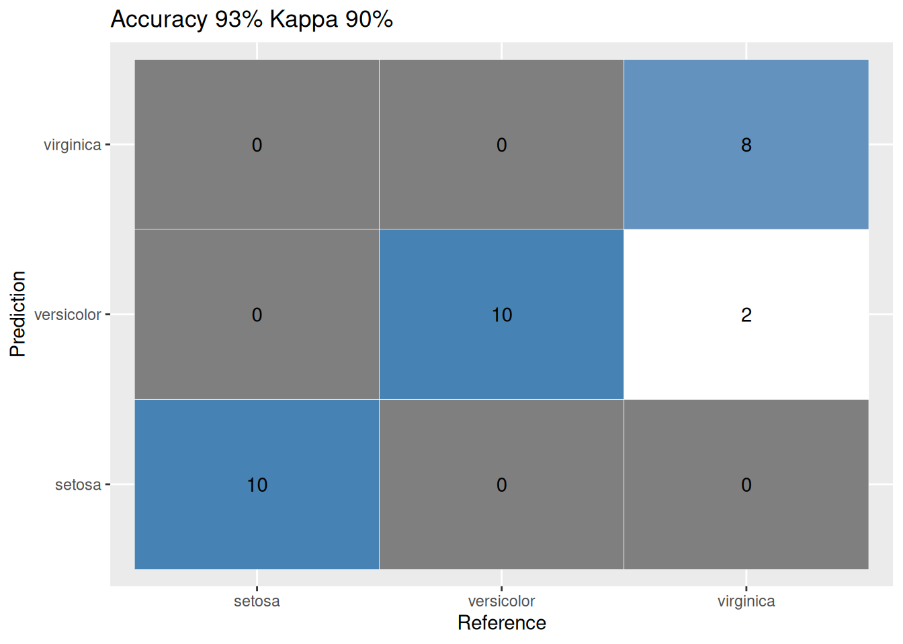

Confusion Matrix
The confusion matrix allows for the visualization of a classification algorithm’s performance. In this blog post, a function is provided to create an image of the confusion matrix. The R package caret includes the confusionMatrix function, which generates a comprehensive output.
Classification
We will perform a Naive Bayes classification on the classical Iris dataset.
Code
# train and test data
iris$spl <- caTools::sample.split(iris, SplitRatio = 0.8)
train <- subset(iris, iris$spl == TRUE)
test <- subset(iris, iris$spl == FALSE)
iris_nb <- naiveBayes(Species ~ ., data = train)
nb_train_predict <- predict(iris_nb, test[, names(test) != "Species"])
cfm <- confusionMatrix(nb_train_predict, test$Species)
cfmConfusion Matrix and Statistics
Reference
Prediction setosa versicolor virginica
setosa 10 0 0
versicolor 0 10 2
virginica 0 0 8
Overall Statistics
Accuracy : 0.9333
95% CI : (0.7793, 0.9918)
No Information Rate : 0.3333
P-Value [Acc > NIR] : 8.747e-12
Kappa : 0.9
Mcnemar's Test P-Value : NA
Statistics by Class:
Class: setosa Class: versicolor Class: virginica
Sensitivity 1.0000 1.0000 0.8000
Specificity 1.0000 0.9000 1.0000
Pos Pred Value 1.0000 0.8333 1.0000
Neg Pred Value 1.0000 1.0000 0.9091
Prevalence 0.3333 0.3333 0.3333
Detection Rate 0.3333 0.3333 0.2667
Detection Prevalence 0.3333 0.4000 0.2667
Balanced Accuracy 1.0000 0.9500 0.9000Plotting
To plot the obtained confusion matrix as a ggplot graphic, we will use the following function:
Code
ggplot_confusion_matrix <- function(cfm) {
mytitle <- paste("Accuracy", percent_format() (cfm$overall[1]),
"Kappa", percent_format() (cfm$overall[2]))
p <-
ggplot(data = as.data.frame(cfm$table),
aes(x = Reference, y = Prediction)) +
geom_tile(aes(fill = log(Freq)), colour = "white") +
scale_fill_gradient(low = "white", high = "steelblue") +
geom_text(aes(x = Reference, y = Prediction, label = Freq)) +
theme(legend.position = "none") +
ggtitle(mytitle)
return(p)
}Code
ggplot_confusion_matrix(cfm)